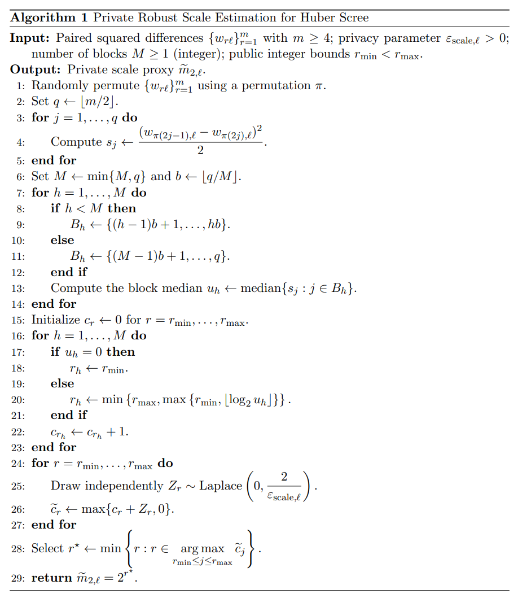
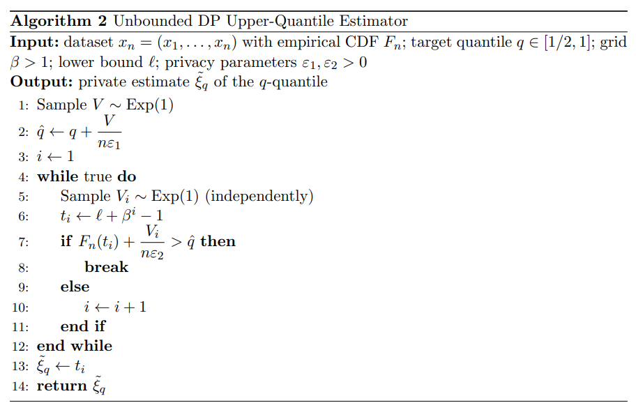
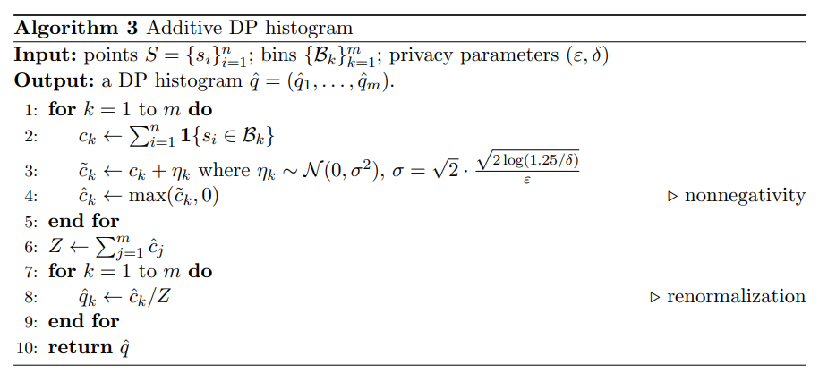
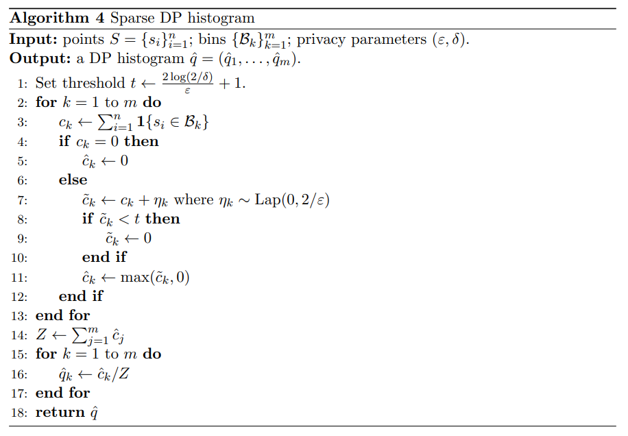
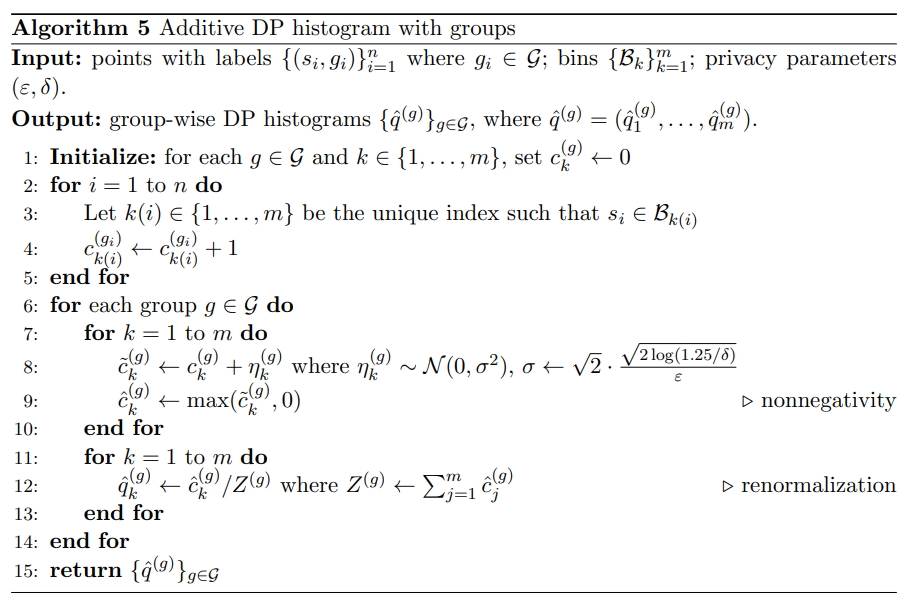
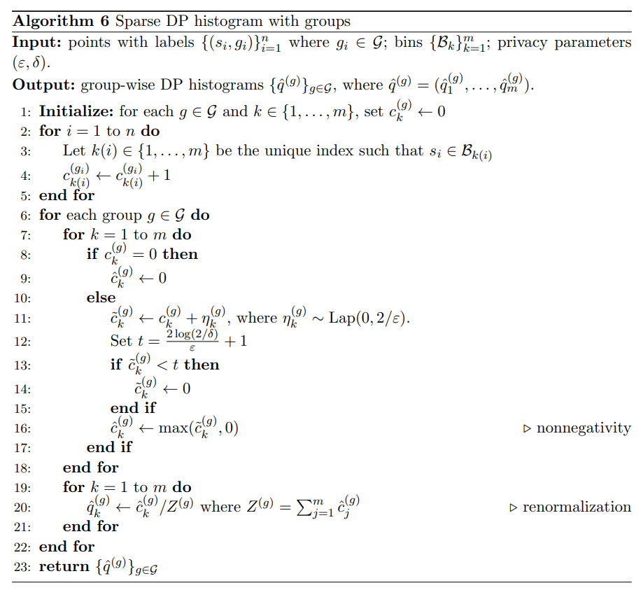

This page collects the algorithms used in the dppca
package.
Algorithm 1: Private and robust estimator for m_2
This algorithm constructs a private scale proxy \widetilde m_{2,\ell} for selecting the Huber robustification parameter \tau_\ell. Given the paired squared differences \{w_{r\ell}\}_{r=1}^{m}, it forms additional pairwise half squared differences and computes block medians to obtain a robust measure of variability. A private histogram over dyadic scales is then used to select the final scale proxy.

Algorithm 2: Unbounded DP upper-quantile estimator
This one-sided algorithm is the building block for the score-frame and PMWM quantile estimates. Following Durfee (2023), it searches a geometric grid using noisy comparisons against the empirical CDF. The fully unbounded mechanism invokes the one-sided search in both the positive and sign-flipped directions.
For a one-sided quantile release with total budget \varepsilon_Q, the implementation uses \varepsilon_1=\varepsilon_2=\varepsilon_Q/2 for the noisy target and query counts. It accepts 0<q<1 and requires a public lower bound \ell\le\min_i x_i. Its empirical CDF queries count observations strictly below the candidate: F_n^{<}(t)=n^{-1}\sum_i\mathbf1\{x_i<t\}.

The displayed pseudocode shows an unbounded search. The implementation limits the search to 5,000 grid queries by default; if no noisy count reaches the noisy target, it issues a warning and returns the last grid value. PMWM uses this default limit with \beta=1.001, whereas score-frame estimation uses \beta=1.01. The fully unbounded wrapper excludes capped results when selecting a signed quantile. The resulting search limits are described in PMWM Methodology and DP Score Methodology.
Algorithm 3: Additive DP histogram
The additive DP histogram adds independent Gaussian noise to each bin count and then post-processes the noisy counts to make them nonnegative and normalized. This is the basic DP histogram mechanism used for score histogram visualization.

Algorithm 4: Sparse DP histogram
When the grid is fine, many bins may be empty, and additive noise can dominate the visualization. The sparse histogram keeps only stable bins whose noisy counts are above a threshold, following the count-based sparse histogram idea of Karwa and Vadhan (2018).

Algorithm 5: Group-wise additive DP histogram
The group-wise additive histogram applies the additive DP histogram procedure separately to each group, using a common frame and grid. It is useful for comparing PCA score distributions across groups.

Algorithm 6: Group-wise sparse DP histogram
The group-wise sparse histogram applies sparse thresholding separately within each group and bin. It provides a private group-wise score histogram while suppressing bins that are not reliably distinguishable from zero.

The histogram pseudocode shows normalization when the retained mass is positive. In the implementation, zero total mass causes the additive methods (Algorithms 3 and 5) to stop with an error, while the sparse methods (Algorithms 4 and 6) return an all-zero histogram. Group-wise privacy accounting assumes public, fixed group memberships, as explained in DP Score Methodology.
References
Durfee, D. (2023). Unbounded differentially private quantile and maximum estimation. In Advances in Neural Information Processing Systems, 36, 77691–77712.
Vishesh Karwa and Salil Vadhan. (2018). “Finite sample differentially private confidence intervals”. In Proceedings of ITCS 2018, LIPIcs, 94, 44:1–44:9. https://doi.org/10.4230/LIPIcs.ITCS.2018.44
Wasserman, L. and Zhou, S. (2010). A statistical framework for differential privacy. Journal of the American Statistical Association, 105(489), 375–389. https://doi.org/10.1198/jasa.2009.tm08651
Yu, M., Ren, Z., and Zhou, W.-X. (2024). Gaussian differentially private robust mean estimation and inference. Bernoulli, 30(4), 3059–3088. https://doi.org/10.3150/23-BEJ1706